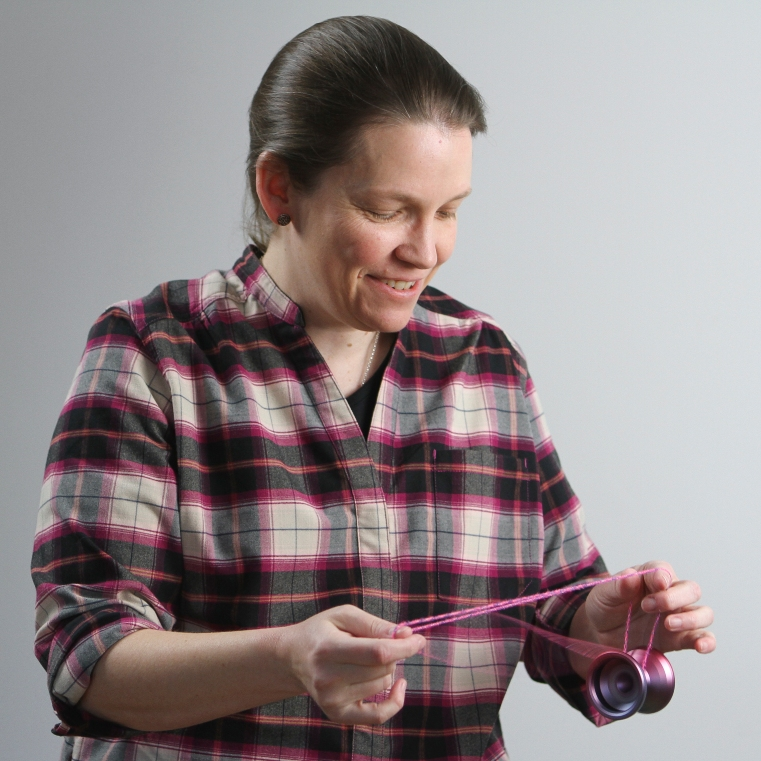

About the Yoyos

I started playing with yoyos again when I was 40. I sometimes regret all the years of my adult life I wasted not playing with yoyos.
I'm planning to create a small website about them later on.
Other Interests
- Weird old movies
- Electric blues guitar
- Hiking
- Tourist traps
- OMG, cats